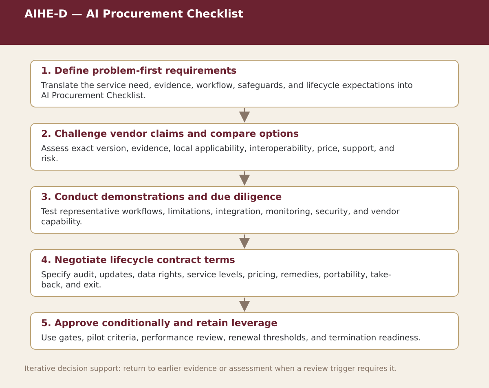

Supplemental specialist tool · Chapter 9
AIHE-D — AI Procurement Checklist
Evaluate problem fit, evidence, integration, lifecycle cost, data rights, security, monitoring, updates, audit, and exit.

Process steps
| Step | Stage | Purpose | Required Input | Expected Output | Decision Or Gate |
|---|---|---|---|---|---|
| 1 | Define problem-first requirements | Translate the service need, evidence, workflow, safeguards, and lifecycle expectations into AI Procurement Checklist. | Local evidence and the prior approved step | Versioned record for: Define problem-first requirements | Proceed, revise, escalate, restrict, or stop as appropriate |
| 2 | Challenge vendor claims and compare options | Assess exact version, evidence, local applicability, interoperability, price, support, and risk. | Local evidence and the prior approved step | Versioned record for: Challenge vendor claims and compare options | Proceed, revise, escalate, restrict, or stop as appropriate |
| 3 | Conduct demonstrations and due diligence | Test representative workflows, limitations, integration, monitoring, security, and vendor capability. | Local evidence and the prior approved step | Versioned record for: Conduct demonstrations and due diligence | Proceed, revise, escalate, restrict, or stop as appropriate |
| 4 | Negotiate lifecycle contract terms | Specify audit, updates, data rights, service levels, pricing, remedies, portability, take-back, and exit. | Local evidence and the prior approved step | Versioned record for: Negotiate lifecycle contract terms | Proceed, revise, escalate, restrict, or stop as appropriate |
| 5 | Approve conditionally and retain leverage | Use gates, pilot criteria, performance review, renewal thresholds, and termination readiness. | Local evidence and the prior approved step | Versioned record for: Approve conditionally and retain leverage | Proceed, revise, escalate, restrict, or stop as appropriate |
Status. This process map is a navigation and decision-support aid. Adapt it to the relevant jurisdiction, institution, population, workflow, technology version, evidence cut-off, and accountable authority.